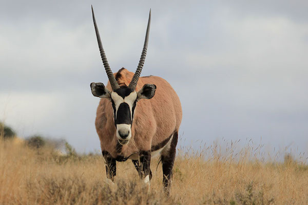

GEMSBOK
Gemsbok are large antelopes that are well adapted to living in dry and hot environments. They are easily recognised by their long, straight horns and striking black and white markings.
Gemsbok mainly eat grasses, leaves, roots and other plants. They can survive for long periods in dry areas because they are very well adapted to finding food and conserving water.
Gemsbok are powerful and fast animals. Their long horns are used for defence against predators and during fights with other gemsbok.
WHERE WILL YOU FIND THEM
The gemsbok are at the top of the park, in the fenced area just above Panda Canyon.